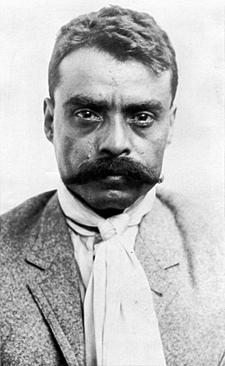

Revolución Mexicana
Reseña
La Revolución empezó el 20 de Noviembre de 1910. Don Francisco I. Madero en 1909 promovió el Partido Antireeleccionista e inició el movimiento armado ese día pugnando por el ¨Sufragio Efectivo no Reelección¨ y murió por la causa de la Revolución en el episodio conocido como la ¨Decena Trágica¨. Pancho Villa tomó a su mando la división del Norte. Emiliano Zapata luchó por la justicia agraria. Venustiano Carranza, se levantó contra el gobierno de Victoriano Huerta y de esa lucha se produjo la Constitución Federal del 5 de Febrero de 1917 que todavía rige a los ciudadanos mexicanos. En este documento quedaron clarificados los ideales de los principales jefes de la revolución mexicana.
Motivos Principales
- La injusta distribución de riquezas y tierra
- La explotación de los trabajadores
- La corrupción política y administrativa
- La negación de la democracia
- El estancamiento cultural y político del país
Personajes Importantes
Porfirio Díaz - Dictador que quitó las tierras a los indígenas y concentró el poder en manos de los hacendados ricos
Francisco Madero - Revolucionario que promovió el Partido Antireelecionista iniciando un levantamiento contra el poder de Díaz. Fue encarcelado y Díaz mantuvo el poder. Madero convenció a otros para que se levantaran en contra de la dictadura con el Plan de San Luís Potosí
Pancho Villa - Fue comandante de la División del Norte al estallar la revolución. Guerrillero incansable
Emiliano Zapata - Era un joven campesino rebelde que luchó por la justicia agraria e hizo el famoso Plan de Ayala. "Tierra, justicia y ley"

Jonathan David López García
Movimiento de los Hermanos Serdan
Los libros de historia nacional cuenta que la Revolución Mexicana inició el 20 de noviembre de 1910, pero la historia oficial inicia en Puebla, dos días antes, con los hermanos Serdán: los primeros mártires del movimiento. Fueron ellos quienes bajo los ideales de libertad y democracia, lucharon antes que nadie por un cambio en la sociedad mexicana.
Cuando en 1908 el entonces presidente Porfirio Díaz declaró en una entrevista que México estaba listo para la Democracia y que veía con agrado la creación de partidos de oposición en el país; los hombres y mujeres que buscaban un cambio vieron en esas palabras los primeros indicios del “cercano progreso”.
Aquiles Serdán, el menor de tres hermanos, fue uno de los hombres con espíritu anti reeleccionista que apoyó, desde el inicio, a Francisco I. Madero; en Puebla, Serdán fundó el club político: Luz y Progreso el que editó el semanario La No Reelección y cuyo tiraje fue muy corto debido a la falta de fondos de los miembros del club. Es en este semanario en el que las primeras ideas revolucionarias comenzaron a difundirse, sus páginas presentaban la afirmación que aseguraba que la República sería salvada, no por los hombres acostumbrados a gobernarla en forma despótica, sino “Por los hombres que no hayan manchado sus conciencias cometiendo atentados contra la Ley”. Ante estas publicaciones e ideas, Díaz comenzó a vigilar a los hermanos Serdán, en especial a Aquiles.
Durante los siguientes meses Aquiles Serdán fue capturado y enviado, con frecuencia, a prisión. Su trabajo con Francisco I. Madero permitió la fundación del Partido Anti reeleccionista Local. Fue durante esta época cuando los planes revolucionarios comenzaron a tomar forma y Serdán viajó a la ciudad de México por armamento, el que adquirió de Arsenio Combaluzier, amigo y compadre de Porfirio Díaz. Es en la ciudad de Puebla donde Aquiles Serdán fue comisionado para levantarse en armas el 20 de noviembre de 1910, pero el 17 de ese mes el gobernador fue alertado del levantamiento de Madero, y después de un cateo en el que el nombre de Serdán aparecía como el propietario de las armas, el gobernador envió a la policía para registrar todo el lugar.
El 1ro de noviembre, con armas en mano, después de haber sido alertado del posible cateo, Aquiles Serdán reunió a sus compañeros ya preparados para iniciar la Revolución Mexicana. Fue ahí, en un pequeño lapso de horas, cuando los hermanos Serdán brillaron en la historia. Máximo Serdán, hermano menor, fue de los primeros revolucionarios que lucharon en una notoria desventaja contra los casi mil soldados que el gobernador envió para terminar con los rebeldes.
Carmen Serdán, hermana mayor de Aquiles, fue de las pocas sobrevivientes de ese conflicto; ella subió armada al techo de su casa para incitar a los vecinos a unirse a la lucha, fue herida por una bala y, después del enfrentamiento, encarcelada junto con su madre en la cárcel de la Merced.
La lucha fue la primer batalla revolucionaria en la que Aquiles Serdán se levantó como el primer mártir de la Revolución. Serdán murió horas después de que el enfrentamiento terminara, cuando todos sus compañeros habían perecido y él logró refugiarse en un hueco en el que escondía armas; allí, a las dos de la mañana, con la casa llena de soldados buscando el cuerpo del autor intelectual del conflicto armado, un ataque de tos delató a Aquiles; fue herido de muerte y, además, recibió el tiro de gracia. Su cuerpo fue exhibido públicamente para alejar de toda idea revolucionaria a quien viera el cuerpo de uno de los primeros anti reeleccionistas.
Pero su causa no fue en vano, Aquiles Serdán fue nombrado Benemérito de la Patria por el presidente Abelardo L. Rodríguez, mediante decreto del 11 de noviembre de 1932; desde entonces su nombre está grabado con letras de oro en los muros de la Cámara de Diputados: Aquiles Serdán (1876-1910).
Revolución Mexicana
Emiliano Zapata
(San Miguel Anenecuilco, México, 1879 - Morelos, 1919) Revolucionario agrarista mexicano. Hijo de una humilde familia campesina, Emiliano Zapata trabajó como peón y aparcero y recibió una pobre instrucción escolar.
Tenía veintitrés años cuando apoyó a la Junta de Cuautla en sus reivindicaciones por los ejidos de Morelos, su estado natal. La persecución desatada contra la Junta por el régimen porfirista lo llevó a Cuernavaca y luego a México como caballerizo del ejército.
De regreso en Morelos, Emiliano Zapata retomó la defensa de las tierras comunales y, en 1909, fue designado jefe de la Junta de Ayala. Al frente de un pequeño grupo armado, ocupó las tierras del Hospital y las distribuyó entre los campesinos.
Mientras el gobernador de Morelos, representante de los intereses de los terratenientes, enviaba fuerzas contra él, Genovevo de la O se sublevó en Cuernavaca. En el curso de los dos años siguientes, otros campesinos se levantaron en armas, entre ellos Tepepa, Merino y el maderista Torres Burgos, con quienes se alió Zapata. En marzo de 1911 se adhirió al plan de San Luis Potosí proclamado por Francisco I. Madero y, a la muerte de Torres Burgos, fue designado «jefe supremo del movimiento revolucionario del Sur».
Tras la caída de la dictadura de Porfirio Díaz, pronto aparecieron las discrepancias entre Zapata, quien reclamaba el inmediato reparto de las tierras de las haciendas entre los campesinos, y Madero, que por su parte exigía el desarme de las guerrillas. Por fin, Zapata aceptó el licenciamiento y desarme de sus tropas, con la esperanza de que la elección de Madero como presidente abriera las puertas a la reforma.
Elegido éste en 1911, y ante el fracaso de nuevas conversaciones, Zapata elaboró en noviembre del mismo año el plan de Ayala, en el que declaraba a Madero incapaz de cumplir los objetivos de la revolución y anunciaba la expropiación de un tercio de las tierras de los terratenientes a cambio de una compensación, si se aceptaba, y por la fuerza en caso contrario. Los que se adhirieron al plan, que eligieron jefe de la revolución a Pascual Orozco, enarbolaron la bandera de la reforma agraria como prioridad y solicitaron la renuncia del presidente.
Las fuerzas gubernamentales obligaron a Zapata a retirarse a Guerrero, pero el asesinato de Madero en febrero de 1913 por orden de Victoriano Huerta cambió la situación. Zapata rechazó la oferta de Huerta de unirse a sus fuerzas y apoyó a los constitucionalistas de Venustiano Carranza contra los huertistas. Nombrado jefe de la revolución en detrimento de Orozco, que había sido declarado traidor, consiguió derrotar a Huerta (1913).
En la convención de Aguascalientes de octubre de 1914 se concretó la alianza de Zapata y Pancho Villa, representantes del revolucionarismo agrario, contra Carranza, de tendencia moderada. Si bien ambos entraron poco después en la capital, su incapacidad política para dominar el aparato del Estado y las diferencias que surgieron entre los dos caudillos, a pesar de que Villa había aceptado el plan de Ayala, alentaron la reacción carrancista.
Perseguido por Pablo González, Zapata se hizo fuerte en Morelos, mientras que Villa era derrotado en el norte. El aporte de algunos intelectuales como Díaz Soto y Gama y Pérez Taylor dio solidez ideológica al movimiento agrarista y ello permitió a los zapatistas organizar administrativamente el espacio que controlaban.
En este sentido, el gobierno de Zapata creó comisiones agrarias, estableció la primera entidad de crédito agrario en México e intentó convertir la industria del azúcar de Morelos en una cooperativa. William Gates, enviado de Estados Unidos, destacó el orden de la zona controlada por Zapata frente al caos de la zona ocupada por los carrancistas.
Sin embargo, la guerra proseguía; en 1917, las tropas de Carranza derrotaron de nuevo a Villa en el norte. Ante la amenaza que Zapata suponía para el gobierno federal, el coronel Jesús Guajardo, que dirigía las operaciones gubernamentales contra él, traicionó y asesinó al líder agrarista tras atraerlo a un encuentro secreto en la hacienda de Chinameca, en Morelos.
Revolución Mexicana
Francisco Villa
(Doroteo Arango Arámbula) Revolucionario mexicano (San Juan del Río, Durango, 1876 - Parral, Chihuahua, 1923). Campesino pobre, huérfano y con escasa formación, cuando estalló la Revolución de 1910 llevaba varios años fugitivo en las montañas por haber asesinado a uno de los propietarios de la hacienda donde trabajaba.
Enseguida Pancho Villa se unió a Madero en su lucha contra la dictadura de Porfirio Díaz, y demostró una habilidad innata para la guerra. Aprovechando su conocimiento del terreno y de los campesinos, formó su propio ejército en el norte de México, con el cual contribuyó al triunfo del movimiento revolucionario.
En 1912 fue encarcelado, al sospechar el general Victoriano Huerta que estaba implicado en la rebelión de Orozco en defensa de las aspiraciones sociales del campesinado, que Madero había postergado. Consiguió escapar a los Estados Unidos y, tras el asesinato de Madero, regresó a México y formó un nuevo ejército revolucionario, la División del Norte (1913).
Con ella apoyó la lucha de Venustiano Carranza y Emiliano Zapata contra Huerta, que se había erigido en dictador. Juntos le derrocaron en 1914; pero después de la victoria de esta segunda revolución, Villa y Zapata se sintieron defraudados por Carranza, y volvieron a tomar las armas, ahora contra él. Esta vez la suerte militar no estuvo de su parte: Álvaro Obregón derrotó a los villistas y Carranza se consolidó en el poder, logrando el reconocimiento oficial de su gobierno por los Estados Unidos.
En un intento de mostrar que Carranza no controlaba el país y de enemistarle con el presidente norteamericano, Wilson, Pancho Villa atacó con sus tropas el territorio estadounidense de Nuevo México y asesinó a 16 ciudadanos de aquel país (1916). Wilson envió un ejército bajo el mando del general Pershing al norte de México para acabar con Pancho Villa; pero el conocimiento del terreno y la cobertura que le daba la población campesina le permitieron sostenerse durante cuatro años, a medio camino entre la guerrilla y el bandolerismo.
Al caer Carranza en 1920, el nuevo presidente Adolfo de la Huerta le ofreció una amnistía y un rancho en Parral (Chihuahua), a cambio de cesar sus actividades y retirarse de la política. Villa aceptó, pero murió tres años después, asesinado en Parral por motivos políticos, durante la presidencia de Obregón.
Revolución Mexicana
Francisco Madero
Francisco Ignacio Madero, llamado erróneamente Francisco Indalecio Madero; Parras de la Fuente, Coahuila, 1873 - México, 1913) Político mexicano cuyo pronunciamiento contra el régimen de Porfirio Díaz desencadenó la Revolución mexicana. Hombre sencillo e idealista, de firmes convicciones democráticas y sincera preocupación social, Francisco I. Madero quiso superar mediante las urnas la anquilosada dictadura de Porfirio Díaz, presentando su candidatura como cabeza del Partido Antirreeleccionista en los comicios de 1910. Sin embargo, tras ser detenido en plena campaña electoral y verse forzado al exilio, entendió que sólo un levantamiento popular podía traer un verdadero cambio.
Redactó entonces desde el exilio el Plan de San Luis, un programa político que incluía un llamamiento a alzarse en armas contra el régimen dictatorial de Díaz el 20 de noviembre de 1910, fecha de inicio de la Revolución mexicana. El triunfo revolucionario lo elevó a la presidencia (1911-1913), pero, incapaz de contentar a los líderes agraristas radicales y presionado a la vez por los sectores conservadores y por los Estados Unidos, acabó siendo traicionado y asesinado por Victoriano Huerta, uno de sus generales de confianza. De este trágico modo terminaron los empeños reformadores de un hombre honesto; un final que, por desgracia, no fue infrecuente en los turbulentos inicios de la Revolución.
Biografía
Miembro de una acaudalada familia de terratenientes e industriales, Francisco Ignacio Madero recibió una esmerada educación en Francia y en Estados Unidos. A su regreso a México (1892), se estableció en San Pedro de las Colonias y se hizo cargo de parte de la hacienda familiar, etapa en que se puso de manifiesto su espíritu progresista y emprendedor: modernizó los sistemas de cultivo y de riego y se esforzó en mejorar la situación de sus trabajadores. Aunque ya por aquellos años albergaba ideales democráticos y de reforma social, así como una preocupación por las condiciones de vida de los campesinos, no empezó a participar activamente en la vida política hasta muchos años después.
La larga dictadura paternalista de Porfirio Díaz (1876-1910) había supuesto la consolidación del principio del orden frente al de las libertades públicas como instrumento para conseguir el desarrollo económico de México. Benefactor de la oligarquía agraria y protector de los privilegios de la Iglesia y de las inversiones anglosajonas, Porfirio Díaz se había eternizado en el poder gracias a la anulación del principio de no reelección, recogido en la Constitución de 1857. El gobierno del dictador descansaba sobre una triple alianza: hacienda, sacristía y cuartel, sectores en que se concentraba todo el poder y todas las tierras.
La estabilidad política y las mejoras económicas que logró Díaz, sin embargo, no fueron a la par con la situación que vivía la mayoría de la población, que no se beneficiaba por igual de las ventajas de la industrialización y del comercio. Los desequilibrios sociales se agudizaron, y se extendió el deterioro de las condiciones de vida entre el campesinado y el proletariado urbano. La inactividad del Parlamento impidió la puesta en marcha de los cauces apropiados para corregir los desequilibrios.
En los últimos años del Porfiriato, el descontento no se limitaba a las clases más desfavorecidas; surgieron voces críticas entre las mismas élites, se gestaron nuevos partidos políticos y aparecieron nuevos líderes, entre ellos Francisco Madero. Hacia 1905, los abusos de poder del gobernador de Coahuila, Miguel Cárdenas, determinaron el inicio de su activismo político: fundó el Partido Democrático Independiente y empezó a exponer sus ideas en el rotativo El Demócrata.
Revolución Mexicana
Porfirio Díaz
(José de la Cruz Porfirio Díaz Mori; Oaxaca, 1830 - París, 1915) Del nombre de este militar y estadista mexicano procede la designación de todo un periodo de la historia moderna de México: el Porfiriato (1876-1911). Y el mismo sufijo ya sugiere lo que fue: una férrea dictadura personalista y paternalista que reprimió toda oposición y anuló la libertad de prensa
Como los monarcas del antiguo despotismo ilustrado, Porfirio Díaz pensaba estar sirviendo a su país al dotarlo, después de medio siglo de guerras y convulsiones, de la paz y de la estabilidad imprescindibles para el progreso económico, social y cultural. Ciertamente logró, aunque a sangre y fuego, la pacificación del país y su despegue en muchas áreas. Pero, hacia el final de su mandato, su política había abierto una enorme brecha entre ricos y pobres; y, en 1910, su decisión de mantenerse en el poder prendió la mecha de la Revolución mexicana.
Biografía
Huérfano de padre desde los tres años, Porfirio Díaz ingresó en el Seminario de Oaxaca para seguir la carrera eclesiástica, pero pronto cambió de opinión. Cursó luego estudios de leyes en el Instituto de Ciencias y Artes, donde fue discípulo del futuro presidente liberal Benito Juárez, quien impartía derecho civil; en adelante sería seguidor suyo en lo político. El Instituto fue clausurado por orden del presidente Santa Anna en 1854. Ese mismo año intervino en la Revolución de Ayutla y apoyó al general Juan Álvarez para derrocar a Antonio López de Santa Anna.
Poco después, Porfirio Díaz ingresó en el ejército, y su carrera militar fue meteórica. En la guerra de Reforma (1858-1861), conflicto civil en el que se enfrentaron conservadores y liberales, apoyó la causa liberal. La guerra concluyó con la victoria de los liberales y llevó a la presidencia a Benito Juárez (1861); finalizada la contienda, Porfirio Díaz fue ascendido a general y elegido diputado.
Apenas un año más tarde tomó de nuevo las armas contra la invasión francesa (1862-1863) y la coronación de Maximiliano I (1864-1867) como emperador de México. Fue jefe de brigada en Acultzingo en abril de 1862 y ese mismo año participó en la batalla de Cinco de Mayo al lado de Ignacio Zaragoza. En 1867 protagonizó una brillante acción militar en Puebla: tras sitiar la ciudad, realizó un asalto sangriento y rápido contra las tropas del emperador Maximiliano, que se refugiaron en los cerros de Loreto y Guadalupe. Sin perder tiempo, avanzó hacia la capital de la República y la tomó el 2 de abril de 1867, hecho que fue de gran trascendencia militar, pues adelantó la caída del Imperio de Maximiliano y el triunfo de Juárez.
El prestigio y popularidad ganados en esta última campaña lo dejó en situación de optar a la presidencia; pero el Congreso prefirió a Benito Juárez en 1867 y lo reeligió en 1871. En noviembre del mismo año Porfirio Díaz lanzó el llamado Plan de La Noria, en el que se pronunciaba contra el reeleccionismo y el poder personal y a favor de la Constitución de 1857 y de la libertad electoral; la sublevación fracasó y Díaz hubo de abandonar el país.
Juárez falleció en 1872, y una amnistía concedida entonces permitió a Díaz regresar a México. Tras la muerte de Juárez, la presidencia recayó en Sebastián Lerdo de Tejada. Cuando en 1876 Lerdo de Tejada anunció su propósito de presentarse a la reelección, Porfirio Díaz se rebeló de nuevo (Plan de Tuxtepec); esta vez consiguió expulsar a Lerdo de Tejada y accedió a la presidencia.
Revolución Mexicana
Causas de la Revolución Mexicana
La Revolución que iniciara el 20 de noviembre de 1910, tiene como todo fenómeno político social un origen multicausal, revisemos algunas de sus causas fundamentales:
Causas de orden político.
El envejecimiento del sistema, manifestado en la prolongada permanencia de Díaz en el poder, así como en la inmovilidad del gabinete porfirista ( el ministro más joven tenía 60 años de edad y por lo menos, 20 años en el puesto ) de la misma forma los diputados y senadores , gobernadores y demás puestos administrativos de distintos niveles, fueron ocupados por elementos fieles al régimen, limitando los espacios requeridos, para su consolidación como clase social, por la cada vez más numerosa clase media.
El incumplimiento, primero de las declaraciones hechas por Díaz a la revista Pearsons Magassine ( Entrevista Díaz-Creelman ) y publicadas en 1909, en las cuales Díaz aseguraba que no participaría en el proceso electoral de 1910, y posteriormente el fraude cometido en dicho proceso y su posterior reelección, que anunciaba claramente la falta de voluntad política de Díaz para
impulsar un cambio democrático.
La influencia de diversas corrientes ideológicas opuestas al gobierno porfirista; sobre todo el anarquismo, manifiesto en el movimiento magonista a través del Programa del Partido Liberal, publicado en 1906, el cual proponía cambios políticos y reivindicaciones para los trabajadores.
Causas económicas.
Inconformidad de los pequeños empresarios dedicados a labores comerciales, agrícolas e industriales, inconformes con el manejo que la oligarquía de los científicos, hacía de los créditos bancarios, pues en muchas ocasiones los destinaba a financiar sus propios proyectos.
Otra razón que motivó también la inconformidad de la clase media emprendedora, eran los efectos que la tienda de raya tenía en el desarrollo del capitalismo, pues al limitar el intercambio dinero–mercancías, dificultaba el crecimiento del mercado interno.
El reparto inequitativo de los beneficios económicos entre el grupo oligárquico sostenedor del régimen y los grupos medios, que veían en la estructura política y económica de porfirismo, una limitante a sus aspiraciones de crecimiento.
Causas Sociales.
El descontento de los campesinos causado por el despojo de tierras, que de manera sistemática se venía dando desde 1883, en que se empezó a aplicarse la ley de deslinde y colonización de tierras baldías, y aunque su aplicación fue suspendida en 1808, sus efectos resultaron catastróficos para la mayoría de los poseedores de tierras que no pudieron comprobar por medio de títulos, la legítima posesión de sus terrenos, que perdieron a manos de las compañías deslindadoras, incrementándose el latifundismo iniciado desde los tiempos de la reforma liberal.
La sobreexplotación del trabajo asalariado en minas, fábricas y haciendas, causante de numerosas huelgas, en los últimos años de la dictadura porfirista, que preparaba los ánimos para una revuelta de alcances mayores.
El descontento en el sector laboral causado por la política discriminatoria aplicada contra los trabajadores mexicanos, quienes recibían un salario menor que los empleados extranjeros dedicados a las mismas labores.
Revolución Mexicana
Constitución
La Constitución Política de los Estados Unidos Mexicanos es la norma suprema de los Estados Unidos Mexicanos. Es el hacer político y legal para la organización y relación del gobierno federal con los Estados de México, los ciudadanos y todas las personas que viven o visitan el país. La actual Constitución es una aportación de la tradición jurídica mexicana al constitucionalismo universal, dado que fue la primera constitución de la historia en incluir muchos derechos sociales. Y era, por mucho, adelantada a todas las de esa época.
La Constitución Mexicana está dividida en 9 Títulos, que contienen 136 Artículos y 19 transitorios. El Primer Título y sus 38 artículos hablan acerca de los Derechos Humanos, las Garantías Individuales, y la ciudadanía mexicana, mientras que los siguientes 98 artículos definen la estructura del Estado Mexicano.
Entre los cambios respecto de la Constitución de 1857, se encuentran la eliminación de la reelección del presidente de la República y el cargo de vicepresidente.
Revolución Mexicana
Culminación de la Revolución Mexicana
Todos los mexicanos saben cuando inició la Revolución Mexicana, (20 de noviembre de 1910) pero pocos saben cuando concluyó, si es que ha concluido, pues a partir del asesinato de Francisco I Madero, el 22 de febrero de 1913, se desataron conflictos armados durante casi 20 años por el poder político en México entre las facciones revolucionarias, que originaron los asesinatos de Emiliano Zapata el 10 de abril de 1919; de Venustiano Carranza el 21 de mayo de 1920; de Francisco Villa el 20 de julio de 1923 y de Álvaro Obregón el 17 de julio de 1928.
Los historiadores dividen al movimiento revolucionario de México en 4 etapas:
La Primera Etapa (1910-1911) con el movimiento maderista para derrocar a Porfirio Díaz que tenía 30 años en el poder presidencial.
La Segunda etapa (1911-1913) cuando Francisco I Madero asume el poder y ordena el desarme de las tropas de Emiliano Zapata y Pascual Orozco quienes consideran a Madero un traidor porque no cumple con la entrega de tierras a campesinos.
La Tercera etapa (1913-1917), conocida como La Decena Trágica, cuando una facción del ejército comandada por Victoriano Huerta, se levanta en armas contra Madero. Huerta asume el poder, disuelve el Congreso de la Unión y arresta a diputados y senadores a los que considera enemigos.
Y la Cuarta etapa (1914-1917) cuando Victoriano Huerta huye del país y se desata una guerra entre convencionistas revolucionarios y constitucionalistas y culmina con la creación de la Constitución de 1917.
Y decíamos al principio que hay discrepancia de opiniones, respecto a la fecha de culminación de la Revolución Mexicana, porque unos señalan que fue el 5 de febrero de 1917 con la proclamación de la Constitución Política Mexicana.
Otros mencionan que acabó en 1920, con la asunción a la presidencia de la República de Adolfo de la Huerta; y algunos señalan el año de 1924 con la presidencia de Plutarco Elías Calles.
Pero, otros historiadores consideran el año de 1940 como la culminación de la Revolución Mexicana. con la etapa llamada El Maximato, bajó el dominio político de Calles.
Ahora bien, si el motivo del movimiento armado fue para que hubiera voto libre y no reelección, pues la Revolución ya cumplió su objetivo, digo yo.
Si el movimiento armado fue para que se repartieran tierras a los campesinos, pues la reforma Agraria ya se agotó, a tal grado que la secretaría que llevaba ese nombre ahora se llama suntuosamente Secretaría de Desarrollo Agrario, Territorial y Urbano con siglas SEDATU.
Y si la Revolución Mexicana se hizo para crear instituciones políticas que permitieran la participación ciudadana con libertad para votar y ser votados, pues ya existen un sinnúmero de partidos políticos que participan en elecciones locales, estatales y federales.
Y si la lucha armada duró casi 20 años para instaurar un desarrollo social y económico que permitiera mejores condiciones de vida para los mexicanos, pues ahí están las estadísticas que usted, curioso radioescucha, puede comparar para verificar que hoy tiene escuelas, universidades, hospitales o vías de comunicación diferentes a las del siglo pasado.
Ahora que si el movimiento armado fue una lucha por el poder presidencial, ahí si no le podemos asegurar si la Revolución Mexicana ha concluido, pues apenas el 23 de marzo de 1994 asesinaron a Luis Donaldo Colosio, quien era candidato del PRI a la presidencia de la República.
Sea lo que sea, revolucionario radioescucha, lo cierto es que mañana se conmemoran 103 años de nuestra Revolución Mexicana. Y todavía algunos dudan de que haya concluido.
Revolución Mexicana
Video acerca de la Revolución
Video
Revolución Mexicana